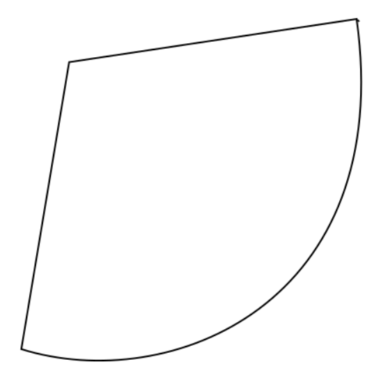

Secure Autonomous Systems
Instructor: Prof. Sibin Mohan, The George Washington University
CSCI 6907/3907 | Fall 2022 | TR 12:45PM - 02:00PM PT | SMTH 115
MP IV-B: Rover controll and attack
Administrivia
| Announcement Date |
Nov. 07, 2022 |
| Submission Date |
Dec. 08, 2022 |
| Submission Time |
11:59PM |
| Total Points |
15 |
Objective
Prelude
Make a new mission
for a making a new mission you have to generate new waypont to show the rover the path it has to take.
what is a waypoint
waypoints are
Rover
controller attack
controller is
PID controller
timming attack
Submission Instructions
-
make a mission : generating path of the picture below by creating waypoints that the robot can take. [5 points]
Bonuse : Mathematicaly show that the point your choosing is reachable by rover? [5 points]

-
controller attack: deply the controller attack and make the rover stop middle of the mission and show the result to TA[10 points]
Bonuse : Make the robot follow another path just by changing pid parameters. [5 points]
- timming attack : run the timming attack on all the misiions you have(rectangle, eight, part1) and show the result to the TA.[10 points]